비서-3급 (2019-11-10 기출문제)
1과목: 비서실무
1. 비서의 업무자세에 대한 설명으로 가장 부적절한 것은?
- 조직 내부의 경영현황과 외부 환경 동향까지 파악하여 경영환경의 흐름을 읽을 수 있어야 한다.
- 새로이 도입된 IT 기기를 능동적으로 활용하여 업무처리 효율성을 높일 수 있어야 한다.
- 거래하는 다른 나라의 문화에 꾸준히 관심을 가져 국제감각을 키워야 한다.
- 현대는 업무처리 방식이 점차 자동화되고 있어 의사소통 능력보다는 정보 수집에 힘써야 한다.
(정답률: 76%)

2. 비서의 업무 관련 자질로 다음 중 가장 부적절한 것은?
- 비서는 시간을 효율적으로 관리하는 기술이 필요하다.
- 비서는 상사의 지시 없이도 상사의 마음을 예측하는 적극성이 필요하다.
- 비서는 여러 다른 상황에 따라 적절하게 응대할 수 있는 판단력이 요구된다.
- 비서는 의사전달이나 지시사항 처리 시 오류가 없게 정확성이 필요하다.
(정답률: 79%)
3. 비서의 성공적인 인간관계 유지를 위한 활동 중 가장 부적절한 것은?
- 비서 동호회에 가입하여 상사보좌에 필요한 유용한 정보를 얻는다.
- 내방객 방문 시 받은 명함을 휴대전화 앱을 활용하여 저장 해둔다.
- 상사의 친목 모임 회원들에게 정기적으로 안부 인사 메일을 보낸다.
- 신문의 인물 동정란이나 인물 관련 기사를 꾸준히 읽는다.
(정답률: 48%)
4. 비서의 전화응대 자세로 가장 부적절한 것은?
- 전화벨이 세 번 울리기 전에 받도록 하며 혹 늦게 받았을 경우는 죄송하다는 사과의 말을 먼저 하도록 한다.
- 상사가 통화 중이거나 전화 받기 어려운 상황일 때는 기다릴 것인지, 메모를 남길 것인지 의견을 묻는다.
- 전화 걸어 자신을 밝힐 때 받는 사람이 누구인지 알기 전까지는 상사의 이름을 밝히지 않아야 한다.
- 상사와 자주 통화를 하는 사람에게 전화가 왔을 경우 상대방의 이름과 직함을 다시 확인하지 않아도 된다.
(정답률: 47%)
5. 비서의 내방객 응대 방법으로 가장 적절한 것은?
- 내방객의 면담 예약 조정 시 가장 중요하게 고려해야 할 사항은 상사와의 친분이다.
- 방문객과 상사의 면담이 예약된 면담시간보다 길어지면 중간에 차를 한 번 더 대접한다.
- 차를 대접할 경우 상사부터 차를 낸다.
- 자주 방문하는 내방객이라도 내방 시에는 방문일시, 이름, 방문목적, 특징 등을 기록해둔다.
(정답률: 66%)
6. 비서의 전화응대 원칙 중 가장 적절한 것은?
- 평소 사용하는 전문용어를 사용하여 주어진 시간 내에 효율적으로 전화통화를 마친다.
- 중요하지 않은 인사의 전화는 간결하게 통화하고 감정을 싣지 않도록 한다.
- 전화는 얼굴이 보이지 않으므로 목소리를 기억하기 위해 상사와 자주 통화하는 사람의 목소리 특징을 적어놓는다.
- 전화는 이메일보다 더 간편하고 정확하게 의사전달이 가능하므로 주요 인사와의 전화 통화 일지라도 완화된 어법이나 존댓말을 사용해도 허용된다.
(정답률: 52%)
7. 비서의 가장 올바른 직장예절을 설명한 것은?
- 상사, 동료들보다 먼저 퇴근을 할 때는 업무에 방해가 되지 않도록 말없이 퇴근 표지판을 세워놓고 퇴근하였다.
- 갑자기 자리를 비우게 되더라도 업무가 원활히 진행될 수 있도록 업무매뉴얼을 만들어 두었다.
- 이직 시 혼란을 방지하기 위하여 3일 전에 회사에 사직의사를 전했다.
- 상사의 직급을 자신의 직급과 동일시하여 품위 있게 행동하였다.
(정답률: 68%)
8. 입사 후 상사와 올바른 인간관계를 위한 비서의 행동으로 가장 부적절한 것은?
- 정형화된 업무의 처리 방법을 우선으로 익혀 업무 처리속도를 높인다.
- 상사의 업무 스타일을 파악하기 위해서 상사의 업무 방식을 주의 깊게 본다.
- 상사의 성격을 파악하여 단점을 보완할 수 있는 개선책을 상사에게 제시한다.
- 조직 내에서 상사의 위치를 파악하기 위하여 조직도를 숙지한다.
(정답률: 64%)
9. 상황에 따라 다른 인사법을 설명한 내용 중 가장 적절한 것은?
- 동료를 복도에서 자주 마주치면 세 번째부터는 그냥 지나가도 무방하다.
- 윗 직급인 두 분이 대화중인 경우 옆을 지나가게 되었을 때는 지나치지 말고 명랑한 목소리로 인사한다.
- 복도에서 모르는 사람이 인사를 하면 보안을 위하여 조용히 지나간다.
- 가능하다면 출근 시에 만나는 직원 모두에게 인사한다.
(정답률: 67%)
10. 비서의 일정관리 방법에 대한 설명으로 가장 부적절한 것은?
- 전화로 회의 약속을 정했을 경우는 이메일이나 공문으로 정식으로 공지한다.
- 상사가 퇴근하기 전에 다음 날의 일정을 확인하고 중요사항이 있을 경우 보고한다.
- 연간 일정표, 월간 일정표, 주간 일정표, 일일 일정표를 적절히 활용하는 것이 바람직하다.
- 일일 일정표에는 가독성을 높이기 위하여 약속 시간과 장소만 기록하면 충분하다.
(정답률: 70%)
11. 다음 중 비서의 일정관리와 관련된 내용으로 가장 적절하지 않은 것은?
- 효율적 일정관리를 위해 쉬운 업무부터 시작하여 난이도를 높여간다.
- 중요하지 않은 업무 중에서 긴급한 업무는 비서가 후배 비서에게 적절한 위임을 할 수 있다.
- 효율적인 일정관리를 위해 비서의 스마트폰에 상사의 일정을 연동시켜 두었다.
- 상사 일정 중 불가피하게 일정이 겹치게 될 경우 상사가 우선순위를 정하도록 안내한다.
(정답률: 45%)
12. 예약 업무에 대한 설명으로 가장 적절한 것은?
- 외국 손님 접대 시에는 한국적 정서가 강한 식당으로 예약하는 것이 바람직하다.
- 식당 예약 시 예약자 명과 연락처는 상사의 이름과 연락처로 한다.
- 골프장 예약 시 필요한 사전정보는 회원번호, 티오프 시간대, 선호하는 코스, 동반자 정보 등이다.
- 외국 호텔 예약 시 비행기 도착시간이 늦어 호텔 체크인이 늦어질 예정인 경우 당일 도착이라면 호텔에 알리지 않아도 자동 체크인이 된다.
(정답률: 62%)
13. 상사 보고용 출장일정표에 포함되어야 하는 사항에 관한 설명 중 가장 부적절한 것은?
- 항공편의 출발일시와 도착일시를 포함시켰다.
- 선호하는 항공편으로 예약된 것을 알리기 위해 항공편명을 포함시켰다.
- 좌석의 크기나 자리배치 등을 예측할 수 있도록 기종과 좌석등급을 포함시켰다.
- 운임을 기록하여 비서가 합리적인 가격에 예약하였음을 알렸다.
(정답률: 62%)
14. 외부 강사가 참석하는 회의를 준비하는 비서의 업무로 가장 부적절한 것은?
- 강연료를 지급하기 위하여 주민증 사본, 은행통장 사본 등의 준비물을 연락했다.
- 당일 도착시간 전에 연락하여 정시 도착 가능성을 확인했다.
- 발표 자료는 분실 방지를 위해 강연자 본인이 소지하도록 하였다.
- 강연 후 귀가 시 주차권을 발부하였다.
(정답률: 58%)
15. 지시받은 업무를 수행하는 방법에 대한 설명으로 가장 부적절한 것은?
- 직속 상사 이외의 다른 부서장으로부터 지시를 받은 경우 반드시 직속 상사에게 보고해야 한다.
- 상사가 지시한 내용을 이행하는 중에 상황이 변경되었을 때는 즉시 중간보고를 해야 한다.
- 상사로부터 지시받은 업무는 문서로 작성한 후 전달해야 한다.
- 두 명의 상사로부터 동시에 지시를 받은 경우는 긴급도와 중요도에 따라 우선순위를 정해야 한다.
(정답률: 36%)
16. 장례식장 조문 시에 사용하는 봉투에 부적절한 단어는?
- 賻儀
- 謹弔
- 弔意
- 華婚
(정답률: 40%)
17. 다음 중 가장 적절한 화법은?
- 이 기사님, 사장님 차 대기시키세요.
- 사장님, 부인께서 전화 주셨습니다.
- 부장님, 사장님께서 2019년도 상반기 매출현황 구두보고를 부탁하셨습니다.
- 부장님, 지금 사장님 실로 오시기 바랍니다.
(정답률: 64%)
18. 비서의 보고 자세 중 가장 부적절한 것은?
- 육하원칙에 의거하여 간결하고 명료하게 보고하였다.
- 보고서 작성 시에는 내용을 효과적으로 전달할 수 있도록 사진, 그래프, 통계 자료 등을 적절히 사용하였다.
- 의견을 제시할 때는 자신의 견해임을 밝히고 객관적인 사실과 구분하여 보고하였다.
- 상사의 지시사항을 완료한 후에 상사가 진행 결과를 물을 때까지 기다렸다가 상세히 보고하였다.
(정답률: 62%)
19. 다음 중 상사 및 기타 정보 관리방법으로 가장 적절한 것은?
- 상사 신상 정보는 수시로 업데이트 하여 원본을 만들어 두고 필요에 따라 항목을 압축하여 사용한다.
- 상사 신상 정보는 필요할 때마다 손쉽게 활용할 수 있도록 공유 자료실에 올려 둔다.
- 사내 구성원들의 생일이나 기념일 등도 정리해 두었다가 상사가 참고할 수 있도록 매년 초에 상사에게 이메일로 전송한다.
- 상사에게 중요한 인물에 대해서 수집한 모든 정보는 휴대전화로 전송하여 실시간으로 확인할 수 있게 한다.
(정답률: 47%)
20. 부고문에 포함되어야 하는 항목이 아닌 것은?
- 사망일시
- 빈소
- 발인일
- 드레스 코드
(정답률: 69%)
2과목: 사무영어
21. 다음 에 들어갈 용어로 바른 것은?
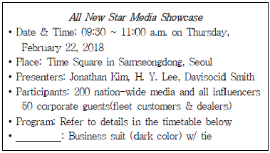
- Dress Code
- RSVP
- Dress Blue
- Venue
(정답률: 62%)
22. 다음 약어의 설명이 가장 올바르지 않은 것은?
- FYI : For Your Information (참고로)
- ATM : Automated Teller Merchandise (현금자동입출금기)
- M&A : Merger and Acquisition (인수합병)
- ASAP : As soon as possible (가능한 한 신속하게)
(정답률: 37%)
23. 다음 중 문법적으로 가장 올바른 문장은?
- I am terrible sorry.
- 4 o'clock would convenient.
- I'm held up at the airport.
- I have to attend a unexpecting meet.
(정답률: 26%)
24. 다음 보기의 단어와 의미가 잘못 연결된 것은?
- belongings : 소지품
- costumes : 세관
- means : 수단, 방법
- appearance : 외모
(정답률: 36%)
25. 다음의 메모 내용 중 맞지 않는 것은?
- 회의 장소를 알 수 없다.
- 회의 안건은 총 3개이다.
- 불참 시 Ms. Young에게 알리면 된다.
- 메모는 미팅 전 발송되었다.
(정답률: 48%)
26. 다음 비즈니스레터에 대한 영작 중 가장 부적절한 것은?
- 귀사와 계속 거래할 수 있도록 협조해주시기 바랍니다. Please help us to continue serving you.
- 귀하께서 보내주신 카탈로그가 유용하긴 하지만 저희는 구체적인 가격 정보를 알고 싶습니다. Although the catalog you sent us is helpful, we would like specific pricing information.
- 곧 귀하의 답장(소식)을 받기를 고대합니다. I am looking forward to hear from you.
- 발송이 지연된 데 대해 저희의 진심 어린 사과를 받아주시기 바랍니다. Please accept our most sincere apology for the late delivery.
(정답률: 33%)
27. 영문편지 봉투에서 발신인과 수신인 주소를 적는 위치로 옳은 것은?
- 발신인 - 좌측 아래 수신인 - 좌측 아래
- 발신인 - 우측 아래 수신인 - 좌측 위
- 발신인 - 좌측 위 수신인 - 우측 아래
- 발신인 - 우측 아래 수신인 - 우측 위
(정답률: 43%)
28. 다음 중 봉투에 기재할 수 있는 내용으로 적절하지 않은 것은?
- REGISTERED MAIL
- SPECIAL DELIVERY
- VIA AIR MAIL
- RE: EXECUTIVE SECRETARY
(정답률: 41%)
29. 다음 중 이메일의 필수 구성요소가 아닌 것은?
- Subject
- Total page number
- Body
- Salutation
(정답률: 48%)
30. 다음의 대화문 중 밑줄 친 부분에 가장 알맞은 표현은?
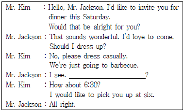
- What time shall I go?
- Do you have any schedule?
- How often do you have a party?
- What is the best way to go there?
(정답률: 46%)
31. 다음 대화의 빈칸에 들어갈 내용으로 적절하지 않은 것은?
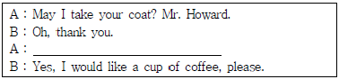
- Can I have something to drink?
- Would you like something to drink?
- Would you care for coffee?
- Can I get you anything to drink?
(정답률: 25%)
32. 다음 전화통화 중 사용하는 표현에서 비슷한 의미를 가진 문장이 아닌 것은?
- Hold on, please.
- Hold the line, please.
- Hold your booth, please.
- Wait a moment, please.
(정답률: 43%)
33. 다음 빈칸에 들어갈 내용으로 적절하지 않은 것은?
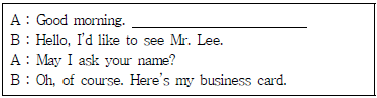
- What can I do for you?
- May I help you?
- Could you do me a favor?
- How can I help you?
(정답률: 46%)
34. 다음 내방객 응대의 대화에서 한글 뜻에 가장 적절한 영어 표현으로 올바른 것은?
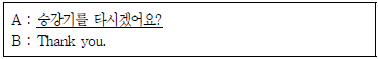
- Would you get on the elevator, please?
- Will you bring the elevator, please?
- Do you get in the elevator, please?
- Shall you take the elevator, please?
(정답률: 40%)
35. 다음 보기 중 빈칸에 들어갈 내용으로 가장 적절하지 않은 것은?
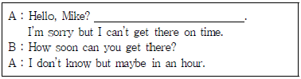
- Cars are not moving at all.
- I'm stuck in a traffic jam.
- You have the wrong office.
- I'm stuck in the snow.
(정답률: 46%)
36. 다음 중 Mr. Lee의 일정에 대해 옳지 않은 것은?
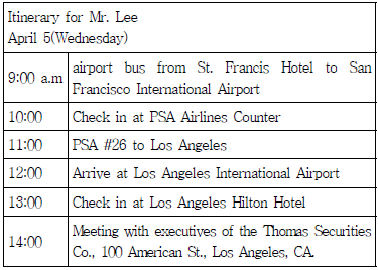
- 오후 2시에 약속이 있다.
- 오후에는 로스엔젤레스에 도착하여 일정을 소화한다.
- 오후 2시 이후에 성 프란시스 호텔에서 체크아웃 한다.
- 로스엔젤레스에서는 힐튼 호텔에서 묵는다.
(정답률: 56%)
37. 다음 빈칸에 들어갈 내용으로 적절하지 않은 것은?
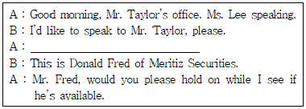
- May I ask who's calling, please?
- Who do you want to speak to?
- May I have your name, please?
- Who's calling, please?
(정답률: 34%)
38. 다음 빈칸에 들어갈 내용으로 가장 적절하지 않은 것은?
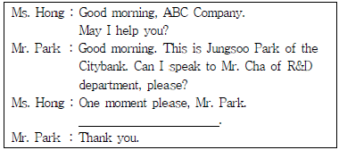
- I'll put you through.
- I'll give his call to you.
- Let me connect you.
- I'll transfer your call to him.
(정답률: 19%)
39. 다음 밑줄 친 부분의 표현으로 올바른 것은?
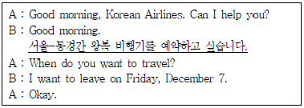
- I'd like to make a reservation for round trip between Seoul and Tokyo.
- I'd like to book a return flight from Seoul to Tokyo.
- I'd like to postpone flight schedule from Seoul to Tokyo.
- I'd like to reserve an one way ticket from Seoul to Tokyo.
(정답률: 33%)
40. 다음 밑줄 친 부분의 한글 표현으로 올바른 것은?
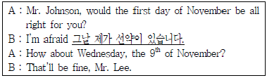
- I have a previous engagement on that day.
- I have an important meeting at this time.
- I have a pre-meeting at the moment.
- I have a formal appointment that day.
(정답률: 30%)
3과목: 사무정보관리
41. 기밀문서를 다루는 비서의 행동 규범으로 가장 부적절한 것은?
- 기밀문서 관리를 위해서 비서의 정보 권한을 상사와 미리 상의한다.
- 회사를 퇴사하게 되는 경우, 보유하고 있는 사내 기밀문서는 모두 반납한다.
- 기밀문서는 분실을 대비하여 복사본을 충분히 확보한다.
- 처리가 완료되지 못한 작업을 위해서 내부 문서를 외부로 가져가지 않도록 한다.
(정답률: 61%)
42. 비서가 수행하여야 할 정보 보안 관리에 관한 설명으로 가장 부적절한 것은?
- 친한 동료나 선배에게 상사의 일정 관련 정보를 요청받았을 경우 필요 이상의 정보는 정중히 거절해야 한다.
- 상사를 대신하여 메일을 발송할 경우, 내용 작성 후 바로 전송하지 말고 상사에게 보고하여 확인받은 후 발송한다.
- 상사가 만나는 내‧외부고객의 명함을 관리하고 보관하는 업무는 정보 보안 대상에 포함되지 않는다.
- 비서가 상사의 이메일을 관리하게 되는 경우라도 사적인 카드 명세서, 비용 고지서 등의 내용은 열람하지 않도록 해야 한다.
(정답률: 63%)
43. 문서 발신과 관련된 설명에서 가장 올바른 것은?
- 직인은 기관장의 명의로 발송하는 문서에 사용하는 도장으로 발신명의 표시의 마지막 글자가 인영의 가운데에 오도록 찍는다.
- 종이에 서명이나 날인하여 발송한 문서의 경우에는 반드시 종이 복사본으로 보관한다.
- 기밀문서를 조직 내부에 전달하는 경우 봉투에 넣어서 봉한 후 직접 전달하지 않아도 된다.
- 봉투 사용 시 법인이나 단체 뒤에는 '제위'라고 경칭을 사용한다.
(정답률: 44%)
44. 다음 중 밑줄 친 부분의 맞춤법 표기가 잘못된 것은?
- 상사집무실은 항상 깨끗이 유지해야 한다.
- 영업1부의 실적이 영업2부의 실적보다 월등이 높다.
- 곰곰이 생각해보니 부장님 말씀이 옳다.
- 김비서가 꼼꼼히 정리한 일정표가 도움이 되었다.
(정답률: 53%)
45. 다음 중 마침표(온점)의 사용이 가장 적절하지 않은 것은?
- 가는 말이 고와야 오는 말이 곱다.
- 1. 연구 목적
- 사장님이 “김부장 오라고 해.”라고 말씀하셨다.
- 제목: 마지막이 아니라 지금부터 시작입니다.
(정답률: 38%)
46. 사장 비서인 김비서가 작성하는 문서 유형으로 분류가 잘못된 것은?
- 상사를 대신하여 작성하는 문서: 연설문, 감사장
- 상사를 대신하여 작성하는 문서: 품의서, 발표용 문서
- 보고하기 위해 작성하는 문서: 조사 보고서, 제안서
- 비서의 업무 처리를 위해서 필요한 문서: 업무 협조문, 문서 수발신 대장
(정답률: 42%)
47. 다음 사내문서 중 '연락문서'의 유형으로 볼 수 없는 것은?
- 회의록
- 안내문
- 업무협조문
- 회람문
(정답률: 52%)
48. 다음 중 모바일 기기의 특성에 해당하지 않는 것은?
- 터치 스크린을 통한 입력
- 작은 화면으로 인한 제약
- 무선 통신망의 활용
- 높은 보안성
(정답률: 53%)
49. 다음 중 팩스, 복사, 인쇄, 스캔 등의 기능을 하나로 통합한 사무정보기기를 지칭하는 용어는?
- 문서관리기
- 다기능 컨버터블 노트북
- 복합기
- 플로터
(정답률: 62%)
50. 게시물의 분류와 검색을 하기 쉽도록 만든 일종의 메타데이터로서 # 기호 뒤에 단어나 문구를 바로 붙여 쓰는 형식으로 만들어 지는 것을 의미하는 용어는?
- 메타태그
- 라벨
- 해시태그
- 키워드
(정답률: 60%)
51. 다음 설명에 해당하는 용어는?
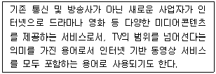
- BTT
- OTT
- BTV
- OTV
(정답률: 39%)
52. 다음 설명에 해당하는 용어는?
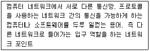
- 근거리 통신망(LAN)
- 게이트웨이
- DNS서버
- 서브넷 마스크
(정답률: 50%)
53. 비서가 신문 스크랩을 진행하고 있다. 다음 중 가장 적절하지 않은 것은?
- 스크랩한 기사에서 중요한 부분을 형광펜을 활용하여 표시한다.
- 회사에 직접적으로 관련된 사항뿐 아니라 인물 동정이나 승진, 부고 등의 정보도 확인한다.
- 신문기사를 오리기 전에 뒷면을 확인해서 스크랩할 다른 기사가 잘리지 않도록 주의한다.
- 신문 기사 정보 획득을 위해서 충분한 시간을 할애해서 신문을 읽고 스크랩한다.
(정답률: 55%)
54. 다음 중 비서의 인터넷 정보 검색 및 정보관리에 관한 내용으로 가장 옳지 않은 것은?
- 비서는 상사가 어떤 정보를 원하는지 막연히 파악하고 있어야 한다.
- 상사가 증권시세에 관한 정보를 원할 경우에는 증권사 사이트를 활용한다.
- 인터넷 검색엔진을 이용할 때에는 AND와 OR과 같은 연산기호를 활용한다.
- 자주 활용하는 정보 사이트는 북마크 기능을 이용하여 저장 해둔다.
(정답률: 47%)
55. 다음 중 우편물 주소 인쇄와 관련하여 우정사업본부에서 권장한 사항에 해당하지 않는 것은?
- 5자리로 된 우편번호를 보내는 사람과 받는 사람 주소 각각 제일 위에 기입한다.
- 보내는 사람 주소는 봉투의 좌측 상단에, 받는 사람 주소는 우측 하단에 기입한다.
- 건물번호와 상세주소는 별도 행에 표기하는 것이 좋다.
- 행정구역 단위를 축약하지 않아야 하며, 통/반 표기는 생략한다.
(정답률: 37%)
56. 다음 대외문서 중 종류가 서로 다른 것은?
- 초대장
- 계약서
- 주문서
- 청구서
(정답률: 54%)
57. 사무문서의 윗부분에 표시된 두문에 해당하는 요소로서 문서를 작성한 회사의 로고, 회사명 및 주소, 연락처 등이 인쇄된 것을 의미하는 용어는 다음 중 무엇인가?
- 발신기관명
- 템플릿
- 레터헤드
- 헤드마스터
(정답률: 48%)
58. 다음 저장매체 중 성격이 다른 하나는?
- 드롭박스
- 원드라이브
- 구글 드라이브
- USB 드라이브
(정답률: 50%)
59. 다음 중 4차 산업혁명을 선도하는 기술을 적용한 스마트 오피스 운영의 긍정적 효과라고 볼 수 없는 것은?
- 회의실 예약, 냉난방 가동 등의 자동화로 단순 업무 감소
- 인공지능 무인 카페테리아 시스템으로 워라밸 만족도 향상 및 일자리 감소
- 가상현실과 증강현실을 융합한 기술을 활용한 영상 회의 운영을 통한 소통, 협업 증가
- 자율좌석 및 공유좌석 시스템을 기반으로 한 업무공간으로 협업 및 업무효율성 향상
(정답률: 54%)
60. 다음 중 쿠키(cookie)에 대한 설명으로 잘못된 것은?
- 사용자가 특정 홈페이지에 접속할 때 생성되는 정보를 담은 임시 파일이다.
- 쿠키를 이용해 맞춤형 광고와 맞춤형 서비스에 활용하는 것은 불가능하다.
- 사용자가 쿠키 기능을 사용할 것인지를 선택할 수 있다.
- 쿠키는 사용하는 웹브라우저에서 자동으로 만들기도 하고 갱신하기도 한다.
(정답률: 52%)
현대는 업무처리 방식이 점차 자동화되고 있어 의사소통 능력보다는 정보 수집에 힘써야 한다는 것은 현대 비서의 업무자세에 대한 중요한 포인트이다. 자동화된 시스템을 효율적으로 활용하고, 다양한 정보를 수집하고 분석하여 조직의 경영환경을 파악하는 능력이 필요하다.